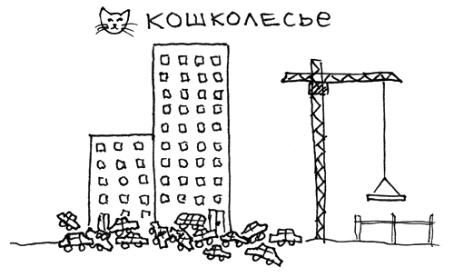

Текст внутри поста рендерится из markdown. Ссылки набираются красным карандашом и подчёркиваются при наведении.
Подзаголовок второго уровня
Между абзацами — воздух. Цитаты оформляются врезкой:
Так ты же со мной. Контраргументов не было.

Дизайн-система блога: цвета, типографика, элементы
«Размеченный блокнот дизайнера»: бумага и шариковая сине-чёрная тушь, чтобы рисунки давали весь цвет. Голубой акцент — им «помечают» выбранное (как редлайн), поэтому он редок. Единый шрифт — Inter: и заголовки, и текст, и служебные подписи.
Палитра Tailwind: нейтральные — slate, акцент — sky. Тёмная тема — вариант dark: (слева светлый оттенок, справа тёмный).
Основной текст набирается шрифтом Inter: спокойный, читаемый, рабочий. Latin & Cyrillic — 0123456789.
Inter · 17px / 1.65 · bodyТекст внутри поста рендерится из markdown. Ссылки набираются красным карандашом и подчёркиваются при наведении.
Между абзацами — воздух. Цитаты оформляются врезкой:
Так ты же со мной. Контраргументов не было.

Рисованная линия красным карандашом под шапкой — единственный «ручной» жест, отсылка к скетчбуку.
С почином, привет, Эгея и вообще!